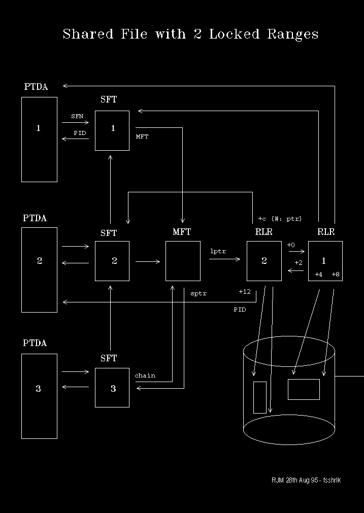

The Record Lock Record
In this example we investigate the RLR and how
it records a locked range within a file. We will also see how the Block-Id
of a thread waiting for access to a locked file range directly leads to
discovery of the RLR.
We introduce the RLR by showing its relationship to other file-system
control blocks in the following diagram. This depicts the following situation:
- Three processes have opened the same file, in the
order process 1, 2, then 3.
- The MFT heads the chain of SFTs, each
representing an open instance of the same file. The MFT points to
the most recent SFT open instance.
- Process 1 and process 2 have each locked a range within
the same file. RLRs 1 and 2 correspond to process 1 and 2.
- The MFT heads the chain of RLRs starting
with the most recent. The pointer from the MFT (lptr) is the
offset within the RLR segment.

[Back: Finding Handles From File Names]
[Next: A Hang Problem Involving Locked Records]